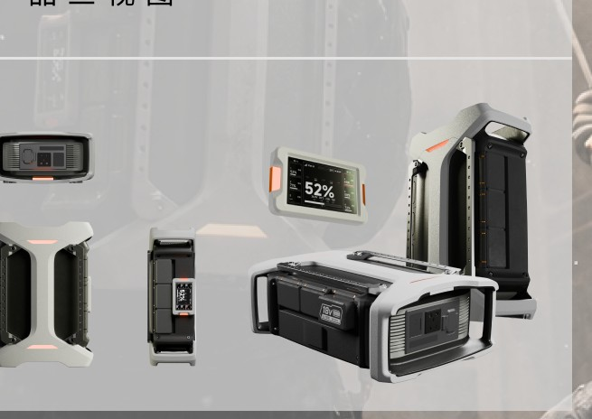
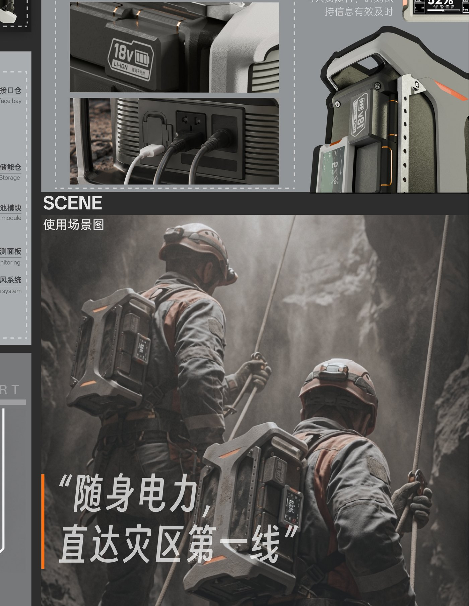
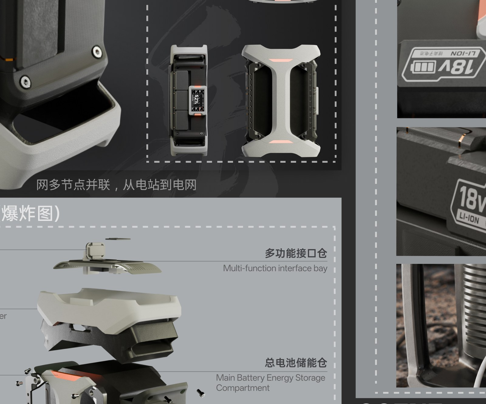
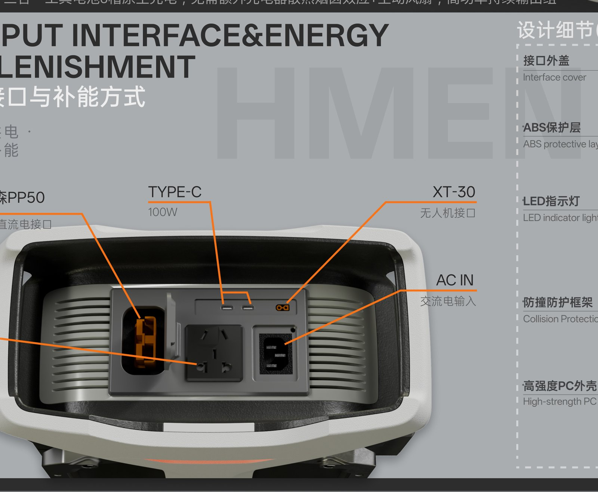
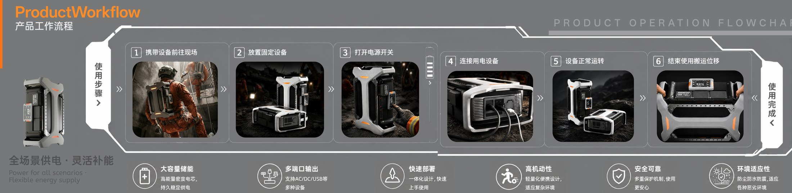
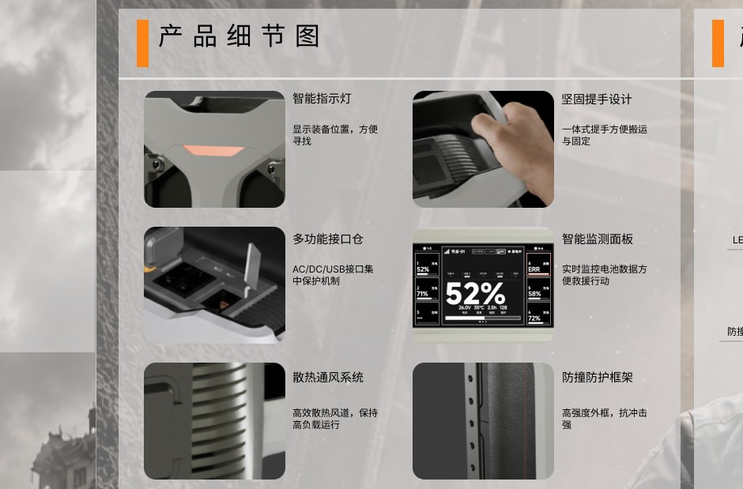
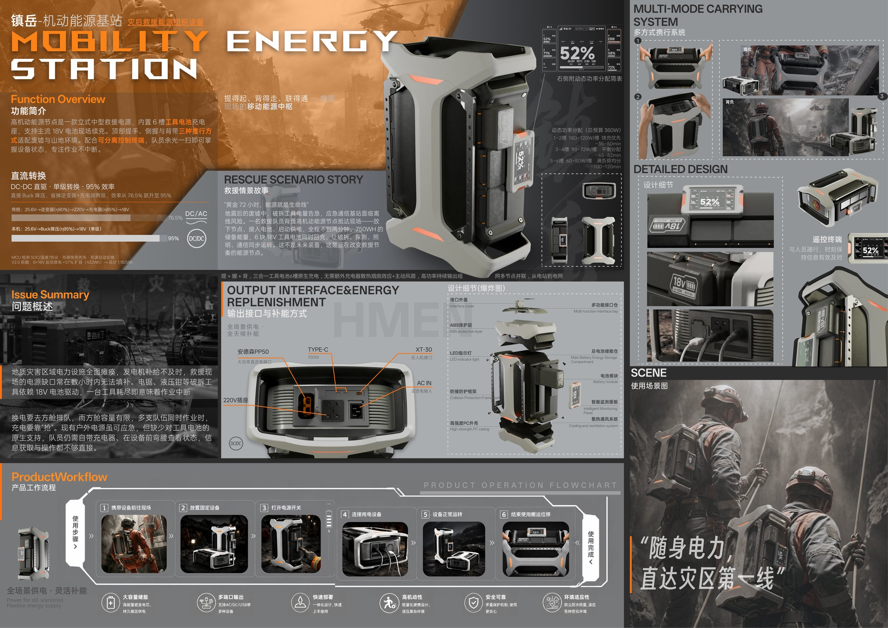
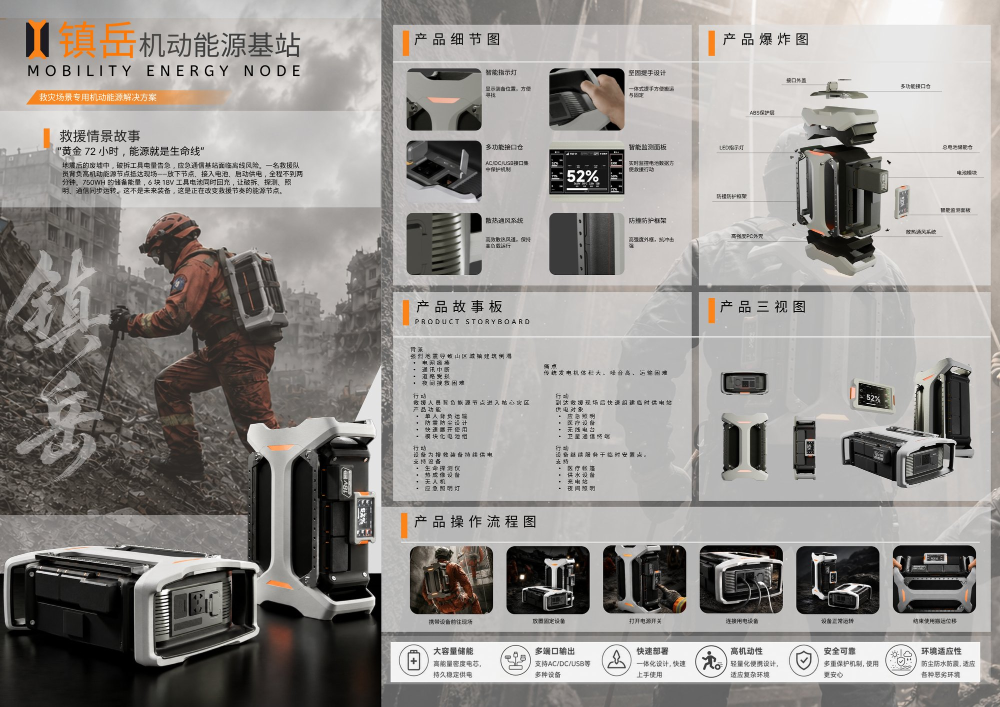

镇岳.
为地震灾害救援设计的便携储能与工具电池补能设备：内置 6 槽 18V 工具电池充电座，多口输出、提 / 握 / 背三形态，一名救援队员即可携带并在现场快速部署。

项目概述 Overview
01镇岳是一台面向地震灾害现场的「机动能源基站」：把救援队常用的 18V 工具电池集中为现场能源单元，通过内置 6 槽充电座与多口输出，为生命探测、热成像、照明与通信设备供电，并为破拆工具电池现场补能。
参数说明：页中的容量 / 功率 / 电压等取自项目展板标注（如 750Wh、总功率预算 3600W、25.6V、DC-DC 效率 95%），**未提供第三方测试或验收资料**，作为设计指标标注，不作已验证性能结论。
背景与问题 Background & Problem
02地震灾害常导致区域电力瘫痪：应急通信基站面临离线风险，破拆工具电量告急。传统发电机「笨重、噪音大、运输困难」；现有户外电源虽可应急，却**缺少对工具电池的原生支持**，充电慢、需自带充电器，且难以在设备前查看状态。
- 黄金 72 小时救援初期电力即生命线：供电中断会直接拖慢破拆、探测、照明与通信。
- 携带与部署设备需单人背负穿越废墟，到场后快速放置、开机、供电。
- 工具电池生态现场大量 18V 工具电池，缺一个能集中、原生补能的节点。
用户与场景 Users & Scenarios
03目标使用者是**救援队员与现场数据人员**；典型场景包括地震废墟、应急通信基站与临时安置点。
救援队 / 数据人员
背负设备进入核心灾区，负责现场供电与设备运转。
地震废墟 · 通信基站
电力瘫痪、道路受损、夜间搜救困难的环境。
临时安置点
为医疗帐篷、供水、充电与夜间照明提供临时电力。

设计目标 Design Goals
04高机动
提 / 握 / 背三合一，满足废墟与山地场景的搬运。
快部署
放置固定、开机、连接设备即可供电（展板流程共 6 步）。
原生补能
6 槽 18V 工具电池直充，无需额外充电器。
方案推演 Concept
05方案以「工具电池即能源单元」为出发点：把分散的 18V 电池集中为可调度的储能仓，并将充电、输出、监测与携带整合进一个可背负的机体。
- 能源单元以 6 块 18V 工具电池作为可替换能源模块，现场集中补能。
- 形态整合提手、侧握与背负带三种携带方式，适配废墟与山地。
- 状态可见智能监测面板与 LED 指示灯，在设备前即可读取电量与状态。
结构与模块 Structure & Modules
06机体围绕电池仓与散热风道组织：上部为多功能接口仓与总电池储能仓，中部为电池模块与智能监测面板，外部以防撞防护框架与高强度 PC 外壳包覆。
- 接口外盖 / 多功能接口仓AC/DC/USB 接口集中，带保护机制。
- ABS 保护层 / 防撞防护框架缓冲与抗冲击，适应复杂环境。
- 总电池储能仓 / 电池模块6 槽 18V 工具电池集中收纳与补能。
- 智能监测面板 / LED 指示灯实时监控电池数据，显示装载与位置。
- 散热通风系统 / 高强度 PC 外壳高效散热风道，保持高负载运行。

接口与补能 Ports & Replenishment
07
统一的多口输出覆盖救援现场的主要用电需求：
- 安德森 PP50大功率直流电接口。
- Type-C 100W设备与终端快充。
- XT-30无人机接口。
- AC IN / 220V 插座交流输入与交流供电。
接口与电气指标均来自展板标注；实际输出能力、效率与热性能待样机/测试确认。
使用流程 Workflow
08从携带到撤收共 6 步，强调到场后的快速部署与状态可读。

- 01携带设备前往现场
- 02放置固定设备
- 03打开电源开关
- 04连接用电设备
- 05设备正常运转
- 06结束使用搬离位移
CMF 与细节 CMF & Details
09外观采用灰白 PC 外壳 + 黑色 ABS 防护 + 橙色强调条与指示灯的配色；圆角硬朗、结构外露，强调工具与救援装备的可靠感。细节包含智能指示灯、坚固提手、多功能接口仓与智能监测面板。

最终方案 Final Board
10 · 展板完整竞赛展板（原图 7442×5264，网页使用 2200 宽版本）：含功能概览、救援场景、输出接口、爆炸图、多方式携带、三视图与工作流程。


说明与反思 Notes & Reflection
11镇岳把「工具电池生态」与「救援现场补能」结合：以 6 槽原生充电减少额外充电器负担，用提 / 握 / 背与 6 步流程回应单人携带与快速部署。
把现场的电，装进一个可背负的节点。
素材说明：本页依据项目展板（300dpi.jpg / 版面2 / 竞赛版面1）整理；同目录另有《调研报告.pdf》，本页未引用其中未经核对的数据。结构强度、散热、重量、成本、续航等工程验证数据与量化成效**暂无材料**；个人角色、项目周期、获奖情况待补。参数均为展板标注，待确认。